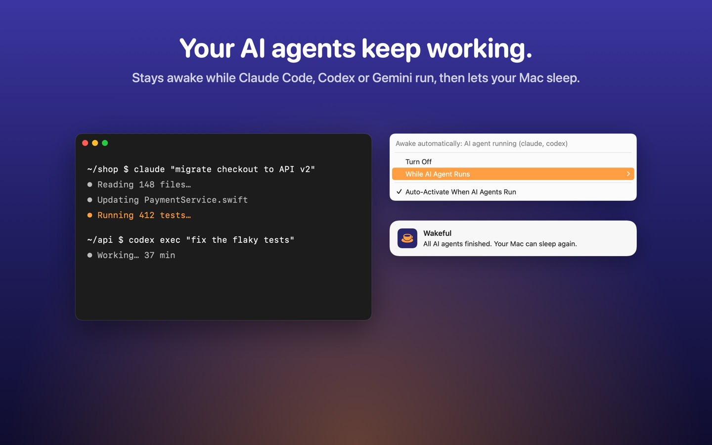
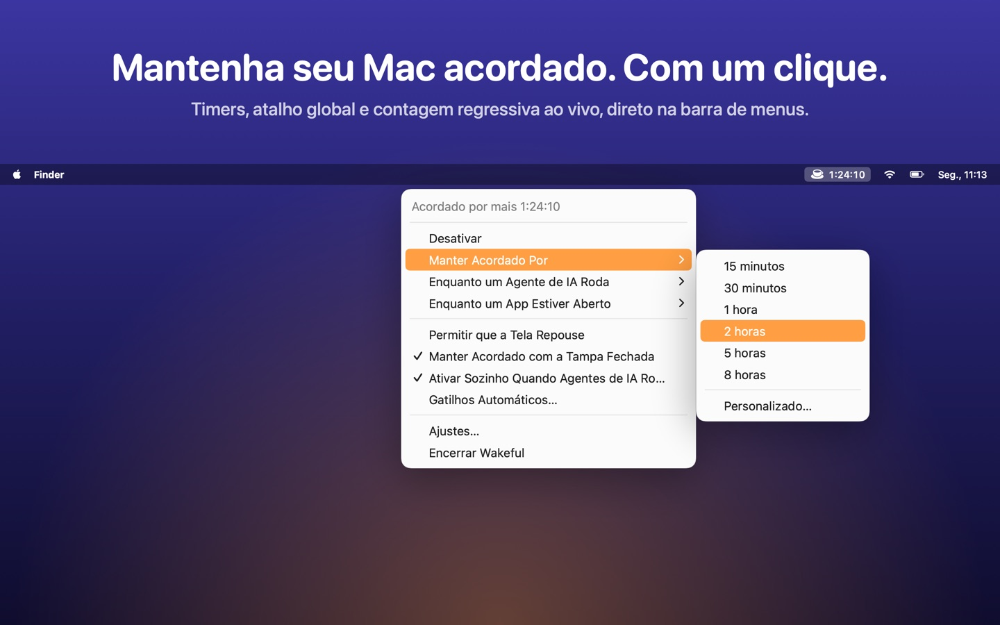

Built for AI agents
Wakeful notices when Claude Code, Codex, Gemini or any command-line agent you add is running, keeps the Mac awake while they work, and tells you when they are done.

Features
One click
Toggle from the menu bar, pick a timer or a custom duration, and see a live countdown.
Smart triggers (Pro)
External display, power adapter, Wi‑Fi network, apps, video calls and schedules.
Processes & apps (Pro)
Stay awake until a command, script or app finishes.
Lid closed (Pro)
Keep working with the lid closed while plugged in.
Widgets & Control Center
A desktop widget, a Control Center control on macOS 26 and Shortcuts actions.
Private
No account, no ads, no tracking. Everything stays on your Mac.
Support
Where is Wakeful after I open it?
Wakeful lives in the menu bar (look for the coffee cup). Left-click toggles it; right-click opens the menu. You can swap the two in Settings.
How do I keep my Mac awake until a command finishes?
Run open -g "wakeful://watch?pid=$$" && your-command in Terminal. Wakeful stays awake until that shell exits. Other commands: wakeful://start?minutes=45, wakeful://stop, wakeful://toggle.
Why does my MacBook still sleep when I close the lid?
macOS only lets apps keep a Mac awake with the lid closed while it is connected to power. Turn on “Keep Awake with Lid Closed” (Pro) and plug in the charger.
Why does Wakeful ask for my location?
Only if you add a Wi‑Fi trigger. macOS requires Location permission to read the name of your Wi‑Fi network. Wakeful never stores or sends your location.
How do I restore Wakeful Pro on another Mac?
Open Settings › Pro and click “Restore Purchases”. Pro is a one-time purchase and works with Family Sharing.
Something else? Open an issue and I will get back to you.
Em português
O Wakeful mantém o Mac acordado exatamente quando você precisa — numa apresentação, num download ou enquanto seus agentes de IA trabalham — e deixa ele repousar no resto do tempo. Timers, gatilhos automáticos, widget, Central de Controle e nenhuma assinatura.

Dúvidas ou problemas? Abra uma issue. Veja também a política de privacidade.